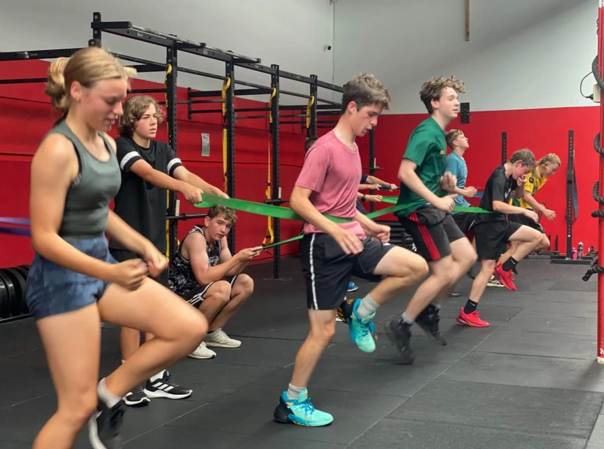
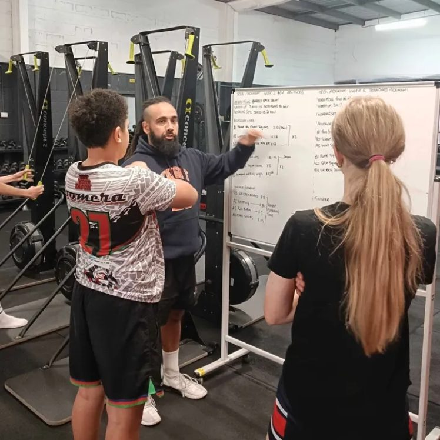
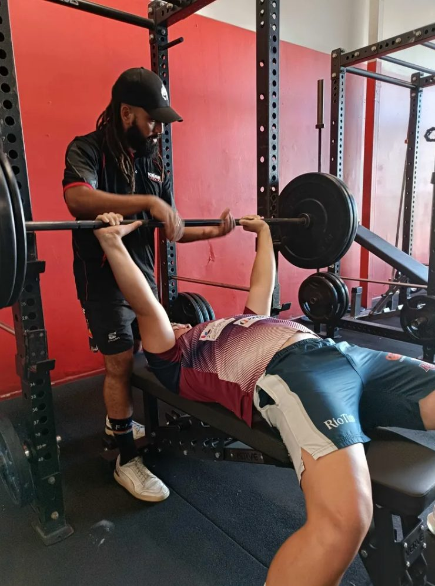
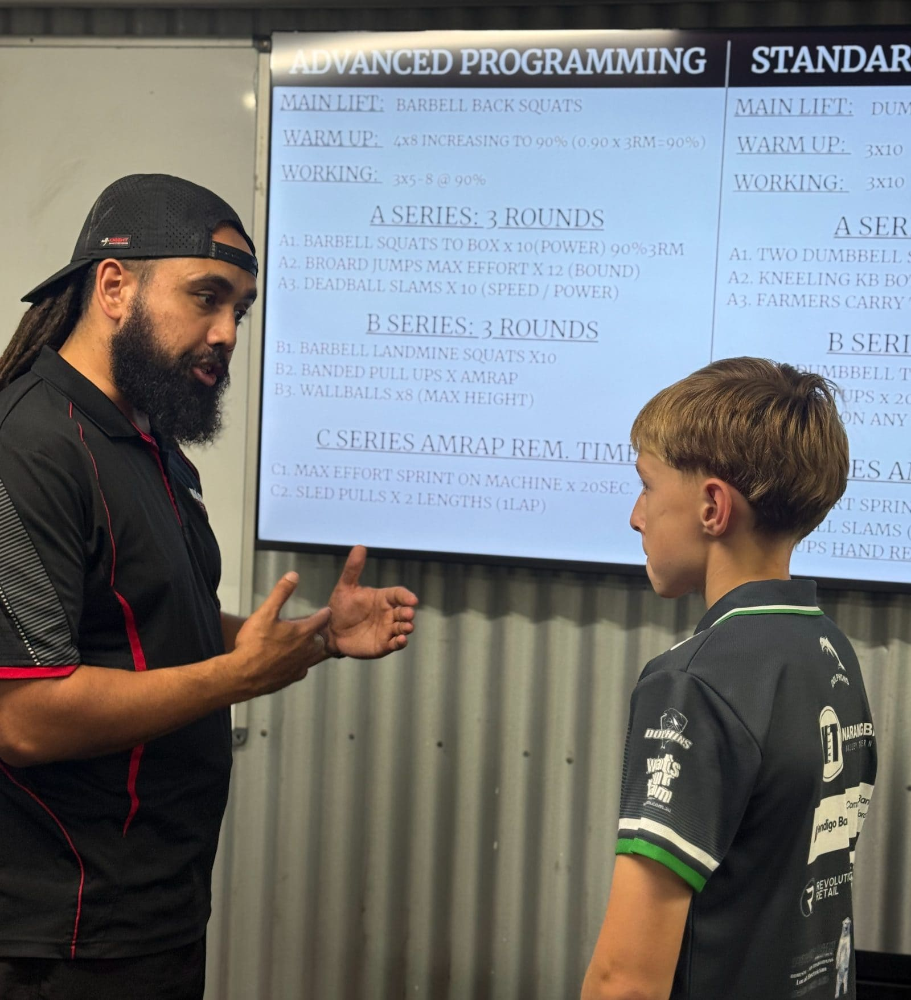
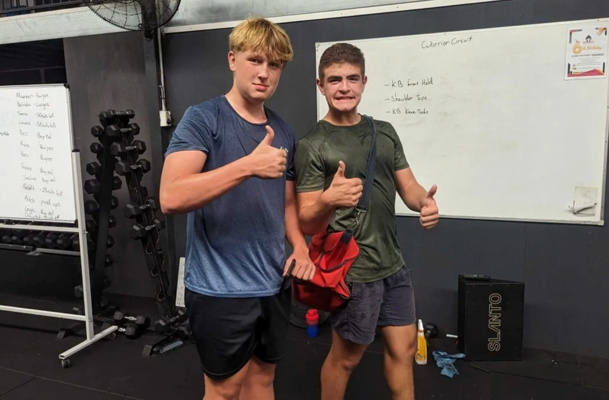
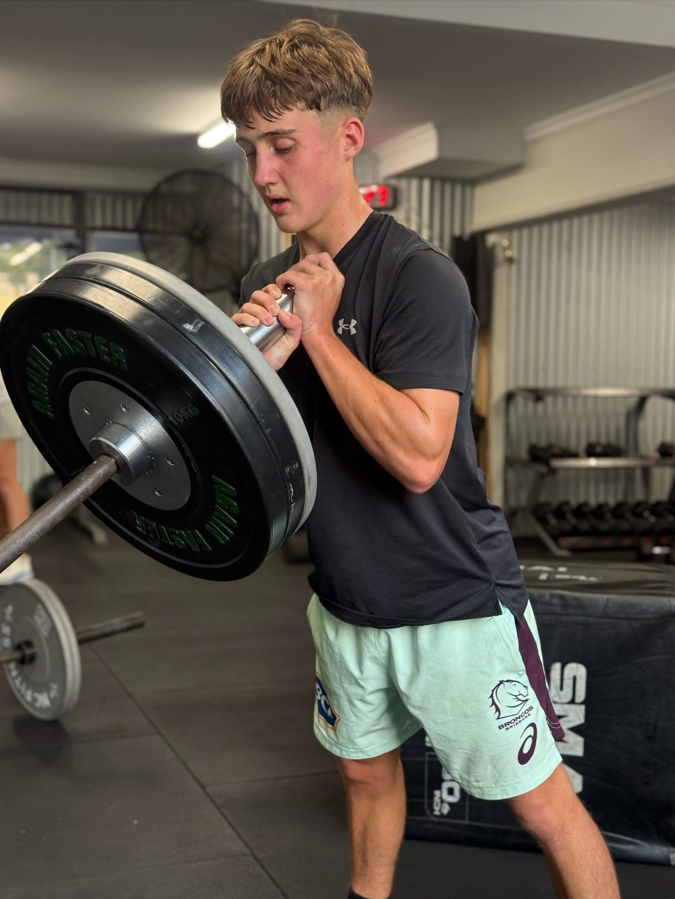
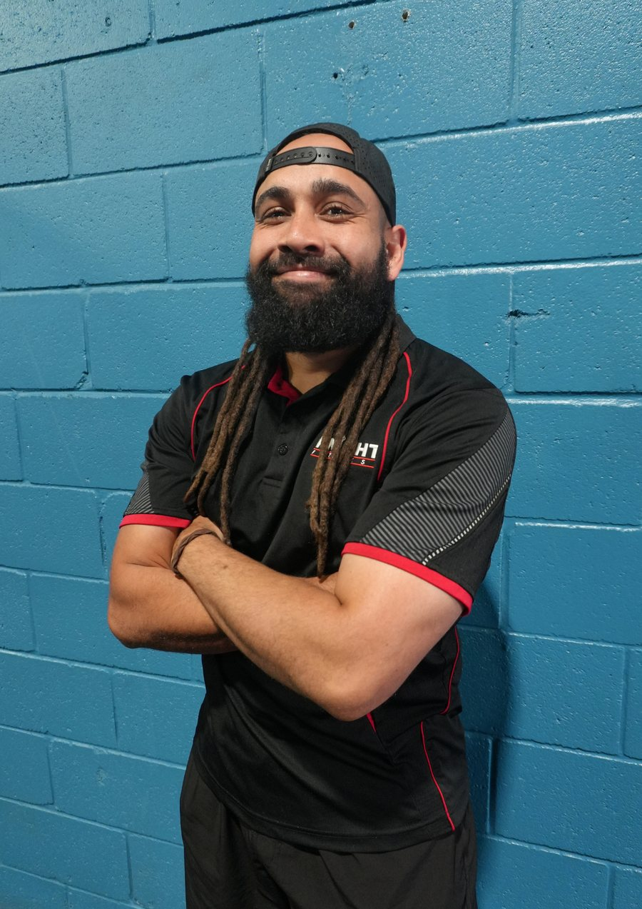

Give your teen an unfair advantage.
A 12-week strength & conditioning program built for teens 13–17 — real coaching, real results, and a team that has their back.
Your teen deserves more than a screen.
The teenage years decide how strong, resilient and confident your child becomes. We turn that window into an unfair advantage — with a coach who actually cares.
Off the iPads
We replace scrolling with barbells. Teens log their own sessions and see real progress every week.
Build bulletproof confidence
Strength in the gym becomes strength on the field, in the classroom, and in how they carry themselves.
Sport-specific edge
Training built around the sport they already love — faster, stronger, harder to injure.
The 12-Week
Strength & Conditioning Program.
Three months that change how your teen trains, eats, moves and believes. Built for ages 13–17 of any fitness level, at Knight Fitness Studio in Lawnton.
Sports Development for Teens
- Screening, testing & re-testing every 6 weeks
- Programs personalised to their sport
- Fun, challenging, results-driven sessions
- Supervised by a qualified S&C coach
- Nutrition & recovery education
- A team, a coach, a sense of belonging
- Up to 3 coached sessions per week
- 12-week foundation, then month-to-month
- Limited spots — we keep groups small

From first session to level up.
Five steps. Twelve weeks. A system that actually works because every teen is coached as an individual.

Book your free session
Come in, meet Coach Zac and try a session. No commitment, no pressure. Parents are welcome to stay and watch — we want you to see exactly how we coach your teen.

Screening & performance testing
We baseline every teen across movement, strength, speed, power and mobility. The data tells us what to train first, and gives us an honest starting line to measure progress against.

A personalised program
Your teen walks in knowing exactly what to do. Their program is built around their sport, their goals and their current level — and updated regularly as they progress.

Coached sessions, every week
Small-group coaching 2–3 times per week. Direct feedback on every rep. A team of teens chasing progress together — showing up, doing the work, getting better.

Re-test every 6 weeks
We re-test at weeks 6 and 12 so progress is measurable, not vibes. You see the numbers. Your teen sees what hard work actually earns — and carries that confidence everywhere else.

Zac Yow-yeh.
Head of Young Knights.
Zac has spent years building young athletes in North Brisbane. He's the reason parents keep bringing siblings, the reason teens keep showing up, and the reason the Young Knights program actually works.
Expect direct coaching, high standards, and a relentless belief that your teen can do more than they think they can.
Real results, not hype.
After 12 weeks of structured strength & conditioning, here's what we typically see in our Young Knights.
Measured from week 0 to week 12 across squat, deadlift and bench.
Leaner, stronger, more athletic — without crash diets or obsession.
Within the first 4 weeks. Training regulates energy, appetite and sleep.
They keep showing up because they see and feel the difference.
Results are indicative, based on Young Knights participants over the past 18 months. Every teen's journey is different.
Not the gym. Not a class.
There are plenty of places your teen could train. Here's why parents choose Young Knights over the alternatives.
- Program built around their sport
- Qualified S&C coach on every rep
- Technique coached, not guessed
- Age-appropriate programming
- Re-testing to prove progress
- Training with their age group
- Nutrition & recovery guidance
- Injury reduction for their sport
- Program built around their sport
- Qualified S&C coach on every rep
- Technique coached, not guessed
- Age-appropriate programming
- Re-testing to prove progress
- Training with their age group
- Nutrition & recovery guidance
- Injury reduction for their sport
- Program built around their sport
- –Qualified S&C coach on every rep
- –Technique coached, not guessed
- Age-appropriate programming
- Re-testing to prove progress
- Training with their age group
- Nutrition & recovery guidance
- –Injury reduction for their sport
See the difference on the gym floor. Your teen's first session is on us.
The questions every parent asks us first.
Still have questions? Give us a call on 0452 519 877 — or book a free session and see for yourself.
Train after school.
Every week.
Sessions run Monday–Friday after school and Saturday mornings. Pick the slots that work for your family — most teens attend 2–3 sessions per week.
Better yet, come see us in person.
Our team of knowledgeable coaches are standing by to answer your questions and show you around the studio.